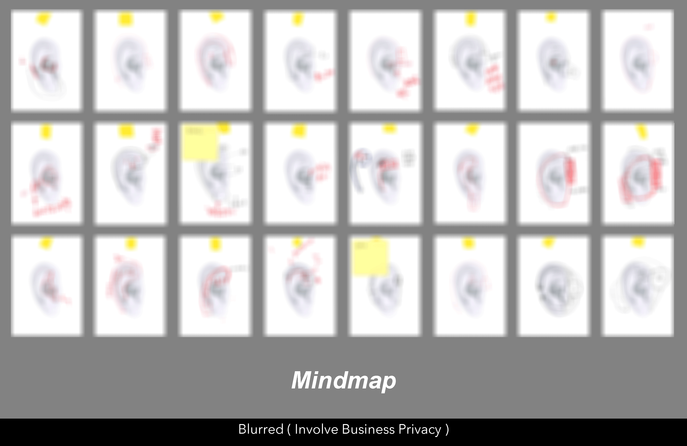

I’m currently a student at Xi'an Jiaotong University studying Industrial Design. Most recently, I'm a User Research Intern at Aftershokz.
I've got several Intern during former summer & winter vacations, related to production and manufaturing though, I'm more familiar with User-Centered Research than R&D processes and Product Innovation.
A huge fan of music, particularly in Jazz and Hiphop, my spare time is fullfilled with friends and my band pals all the time.
Now, let's have a look at my experiences.

SHENZHEN 2019.11 Till Now
Market Research
Investigation on the market price layout of earphone products, comments screening and labeling, competitive products screening and technical research.
User research
Research: satisfaction of in-use products, research on users' product needs and usage scenarios, concept acceptance of new products,
Interviews: interviews with users of competitive products, proof-of-concept interviews
Test: Competitive products wear test, structure (wear) prototype test, prototype test

Product Design & Requirement Verification
Verification of the concepts of "comfort" and "stability" based on competing products
Literature reading , complete the production of the wearing prototype, and verify the stability and comfort respectively
Model Making
Combine the results of anthropometry to complete the functional verification of the structure of the human ear
Mechanical model verification, spatial layout verification and production of wearing prototype
Combine the electronic and acoustic components in the team to complete the production of the model machine. Including hand model, hyper scanning, etc.
SHENZHEN 2018.6-2018.8
Participate in pre-research and concept design, market research and usability analysis of new products, and evaluate the voice interaction functions of 13 wearable devices.
Completed the technical investigation and analysis of the company's school recruitment unit, and simulated the results of the school recruitment during the three-year period, and gave a guidance plan to reduce the turnover rate.
SUZHOU 2017.6-2017.8
Participate in the production of prototypes of medical monitoring screens, and in-depth internships in each outsourced unit (processing center, anode plant, frost plant)
Participate the company's interior design and graffiti wall drawing in the new office area.
FUZHOU 2016.6-2016.8
Fujian Xiangxin Co., Ltd.
User Research
Market research on mobility aids for the elderly, and user tracking observations of 2 persons were conducted to refine user needs and product usage scenarios.
Product Design
Combined with the results of user research, it provides survey results and previews of design solutions for the barrier-free design production line developed by the company.
XI'AN 2014.12-2015.2; 2015.7-2015.8
Chunfeng Electric Mould Factory
Machining Intern
Participate in the internship of the five major types of work: turning, milling, planing, grinding and clamping in the machining unit, and participated in the completion of the milling processing of several milling flanges.
Participate in the assembly and pretreatment of two tooling.
Enterprise Project 2018.5-2019.4
User Privacy Sensitivity Survey
Moderator
Complete the investigation of privacy-related units in different life scenarios under the background of information security, and sort out the scenarios involving privacy information.
Combined with the privacy information to determine user scenarios, the organization completed 8 interviews in the form of FOCUS GROUPs with a total of 64 persons, combined with the interview content and feedback to confirm the analysis results obtained in the previous survey, and finally gave different user portraits of service providers about "information exchange services" Willingness, and design guidelines for integrated services.
Enterprise Project 2017.1-2017.6
Concept Design of Service Station
Service Innovation Group Leader
Complete the conceptual design of the service station, and solely responsible for the "service innovation" link, lead the team to complete the product design of the custom component, and launch the "custom module", "AR navigation" and other service innovation links.
Course Project 2016.9-2017.1
Windows 10 System Usability Test
Complete the operation task statistics and factor framework in the Windows10 system, and create a 2 to 4 hour task framework to test the novice users, experienced users and expert users one by one.
The total sample exceeds 140 person-times, and the individual completes the test of 10 person-times, and completes the analysis of "Cortana Xiaona" in the voice interaction link.
Course Project 2016.2-2016.6
Value Survey / Color Preference Survey
Complete surveys of preferences and values ​​for college students in six colleges and universities in Xi'an, of which 224 people (a total of 2300 people) and 164 people (a total of 1800 people) in the value survey are completed.
Concerts & Galas as
Director
2015 the 35th "KUASHIDAI XIANGWEILAI" Star of Jiaoda- Semi-final
Producer
2015 the 37th "YUANQI SHUANGJIAZI" School-level Orientation Party
Producer
2016 the 36th "Fenghua Zhengmao" Star of Jiaoda - Preliminary, Semi-final and Final
Organizer
2016 Nov Feeling Music Club “Warm Winter”Concert
Director
2017 Apr Feeling Music Club Pop Music Annual Concert
Organizer
2018 Dec Feeling Music Club “Warm Winter”Concert
Director
2019 Apr “Feeling is me”15th Anniversary Music Celebration
Director
2019 Jun ZEIXINBUSI “KissGoobye”Livehouse Concert